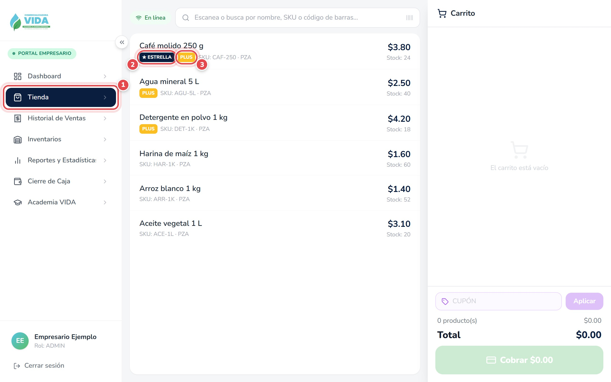
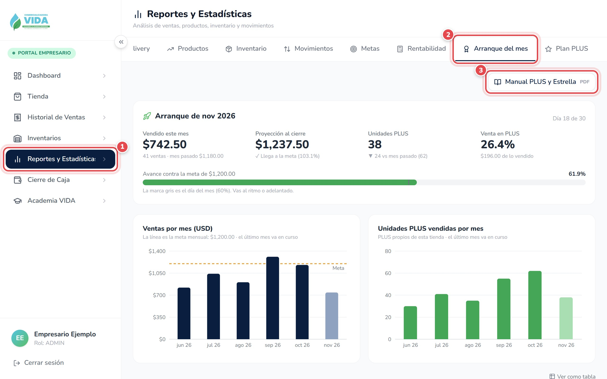
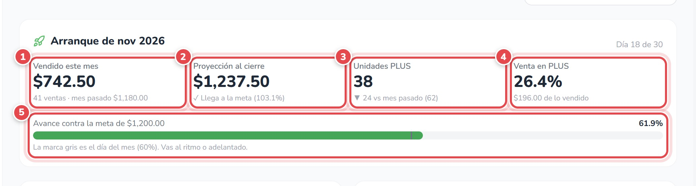
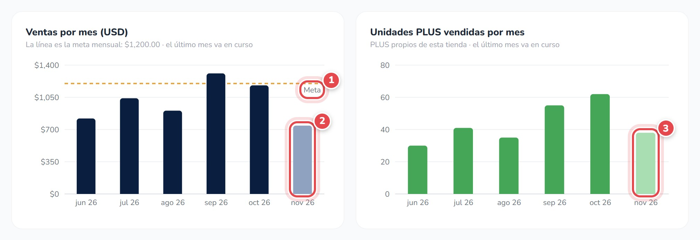
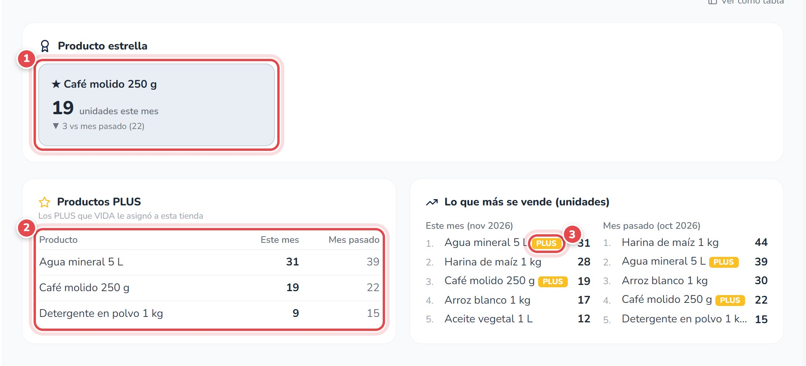

Qué son, cómo reconocerlos en el sistema, cómo venderlos y cómo medir tu avance cada mes.
PLUS★ ESTRELLA
Comercializadora VIDA · Plataforma de Desarrollo EmpresarialNoviembre 2026
Para el empresario y el equipo de cada tienda VIDA. Tu tienda gana más con dos herramientas que VIDA le asigna:
los Productos PLUS, el grupo de productos que más ganancia te deja, y el Producto Estrella, el producto
en que toda la tienda se enfoca este mes.
PLUS Productos PLUS
Un grupo de hasta 30 productos que más ganancia le dejan a tu tienda. Se venden todo el año.
★ ESTRELLA Producto Estrella
El producto (hasta 3) en que la tienda pone su energía este mes. Una sola prioridad para todo el equipo.
1 Qué es un Producto PLUS
Un Producto PLUS es uno de los productos que más ganancia le deja a tu tienda por cada unidad vendida. No es necesariamente el más caro ni el que más se vende: es el que tiene mejor margen.
Los define VIDA para cada tienda, según su catálogo y sus márgenes. Cada tienda puede tener hasta 30 PLUS propios.
Si tu tienda todavía no tiene PLUS propios, usa los PLUS generales del catálogo VIDA.
La lista puede cambiar de un mes a otro. Revisa siempre la que muestra el sistema.
2 Por qué vender PLUS
Con la misma venta, un PLUS te deja más del doble de ganancia que un producto normal. Por eso cubre antes los gastos fijos de la bodega (alquiler, luz, sueldos) y lo que vendas después es ganancia.
Ejemplo ilustrativo
Producto normal
Producto PLUS
Margen de ganancia
15%
35%
Ganancia por cada $10 vendidos
$1.50
$3.50
Venta necesaria para ganar $100
$667
$286
Los márgenes reales de tu tienda están en Reportes → Rentabilidad.
En este ejemplo, para ganar lo mismo necesitas vender menos de la mitad si lo haces con PLUS. La regla es simple: cuando el cliente duda, recomienda el PLUS.
3 Qué es el Producto Estrella
El Producto Estrella es el producto en que toda la tienda pone su energía este mes. Mientras los PLUS son una lista, la estrella es una sola prioridad clara para todo el equipo.
Lo elige VIDA para cada tienda, normalmente entre sus productos de mayor margen.
Puede haber hasta 3 por tienda, pero lo más efectivo es enfocarse en uno.
Puede cambiar cada mes, según la temporada, el inventario o lo que VIDA quiera impulsar.
En la caja lleva la etiqueta ★ ESTRELLA.
Por qué funciona: un equipo que empuja un solo producto lo vende mucho más que uno que intenta empujar treinta. La estrella le da a tu tienda un objetivo concreto y fácil de medir: cuántas unidades vendiste este mes contra el anterior.
4 PLUS y Producto Estrella: la diferencia
Productos PLUS
Producto Estrella
Qué es
Los de mayor ganancia de la tienda
El producto en que se enfoca la tienda este mes
Cuántos
Hasta 30 por tienda
Hasta 3 por tienda
Quién lo define
VIDA
VIDA
En la caja
PLUS etiqueta dorada
★ ESTRELLA etiqueta azul
Qué se mide
Unidades PLUS y % de la venta en PLUS
Unidades vendidas este mes contra el anterior
Un producto puede ser PLUS y estrella a la vez; en ese caso lleva las dos etiquetas.
5 Dónde los ves en el sistema
No tienes que memorizar la lista: el sistema marca los PLUS y la estrella en cada lugar donde vendes.
Dónde
Qué ves
Para qué te sirve
Caja (menú Tienda)
Etiquetas PLUS y ★ ESTRELLA junto al nombre
El cajero sabe qué recomendar al cobrar
Inventario
Etiqueta dorada PLUS en la lista
Revisar que nunca te falte stock de un PLUS
App de clientes
Los PLUS de tu tienda y la sección Productos Club VIDA
El cliente los descubre antes de llegar o al pedir a domicilio
Reportes → Arranque del mes
Unidades PLUS, % de la venta en PLUS y tu Producto Estrella
Medir si vas bien y corregir a tiempo
Reportes → Plan PLUS
Unidades de cada PLUS a vender al mes y al día
Saber la meta exacta para cubrir tus gastos fijos
Si un producto no aparece marcado como esperabas, recarga el panel con Ctrl + F5 y, si sigue igual, avisa a VIDA.
Así se ve en la caja

Para vender, entra a Tienda en el menú.
★ ESTRELLA: tu producto del mes. Ofrécelo primero a cada cliente.
PLUS: producto de buena ganancia. Recomiéndalo cuando el cliente dude.
6 Cómo vender más PLUS
Siete prácticas que puedes aplicar desde hoy, sin gastar más:
Ponlos a la vista. Coloca los PLUS a la altura de los ojos y cerca de la caja. El Producto Estrella va en el mejor lugar de la tienda.
Recomienda en la caja. Cuando el sistema muestre la etiqueta PLUS o ★ ESTRELLA, ofrécelo: “¿Ya probaste este? Es de los que más recomendamos”.
Ofrece el PLUS como alternativa. Si el cliente pide un producto normal, menciona el PLUS equivalente y su beneficio, sin presionar.
Arma combos. Junta un PLUS con un producto de alta rotación (por ejemplo, el PLUS con el pan o el café del día).
Nunca te quedes sin stock. Revisa el inventario de tus PLUS cada semana; un PLUS agotado es ganancia perdida.
Entrena a tu equipo. Que cada cajero sepa cuáles son los PLUS y la estrella del mes y por qué convienen.
Invita a la app. En la app los clientes ven la sección Productos Club VIDA y pueden pedir a domicilio.
7 Cómo vender el Producto Estrella
La meta mínima con la estrella es vender más unidades que el mes pasado. Conviértela en una meta diaria que todo el equipo conozca.
Tu meta diaria, en un minuto
En Reportes → Arranque del mes, mira cuántas unidades de tu estrella vendiste el mes pasado.
Súmale lo que quieras crecer (por ejemplo, un 10%).
Divídelo entre los días del mes.
Ejemplo
El mes pasado vendiste 44 unidades.
Con un 10% más, la meta es 48 unidades.
En un mes de 30 días son unas 2 por día.
Cinco prácticas para la estrella
El mejor lugar de la tienda. A la entrada o junto a la caja, a la altura de los ojos y siempre bien surtido.
Un cartel sencillo. “Producto del mes” o “Recomendado VIDA”, con el precio visible.
Una frase para todos. Que cada cajero ofrezca la estrella con la misma frase corta, a cada cliente.
Meta del día a la vista. Anota cuántas llevas hoy y cuántas faltan; celebra cuando el equipo la cumple.
Stock asegurado. La estrella nunca puede agotarse: revísala cada día y pide reabasto con tiempo.
8 Cómo medir tu avance, paso a paso
Todo está en el panel, en Reportes → Arranque del mes. Sigue estos cuatro pasos; los números rojos de cada imagen te dicen dónde picar o qué mirar.
Paso 1. Abre el Arranque del mes

En el menú de la izquierda, pica Reportes y Estadísticas.
Pica la pestaña Arranque del mes. Si no la ves, desliza las pestañas hacia la izquierda.
Con este botón abres este manual cuando lo necesites.
Paso 2. Revisa cómo va tu mes

Vendido este mes: lo que llevas vendido y cuánto vendiste el mes pasado.
Proyección al cierre: si sigues a este ritmo, cuánto venderás en el mes y si llegas a la meta.
Unidades PLUS: cuántas llevas y la diferencia con el mes pasado.
Venta en PLUS: qué parte de lo que vendes es PLUS. Mientras más alto, más ganas.
Barra de avance: si la barra pasa la marca gris (el día del mes) va en verde y vas al ritmo; si se queda atrás se pone naranja y vas atrasado.
Paso 3. Mira tu tendencia de 6 meses

La línea punteada es tu meta mensual. Las barras que la pasan son meses en que cumpliste.
La barra clara es el mes en curso: todavía no termina, no la compares como si fuera un mes completo.
Unidades PLUS del mes en curso. La meta es que cada mes sea más alta que la anterior.
Paso 4. Revisa tu Producto Estrella y tus PLUS

Tu Producto Estrella: unidades de este mes y la diferencia con el mes pasado.
Tus Productos PLUS: unidades de cada uno este mes y el mes pasado. Empuja los que bajaron.
La etiqueta PLUS en lo más vendido te muestra cuáles de tus productos estrella de venta son PLUS.
¿Y cuánto tengo que vender? Plan PLUS
Abre Reportes → Plan PLUS (la pestaña de al lado).
El sistema te dice cuántas unidades de cada PLUS vender al mes y al día para cubrir tus gastos fijos.
Compáralo con lo que vendiste en los últimos 30 días y ajusta tu exhibición y tus recomendaciones.
Si no tienes meta mensual, defínela primero en Reportes → Metas; sin ella, el cuadro no puede medir tu avance.
9 Tu rutina de cada mes
Tres momentos, quince minutos cada uno: arrancar, revisar cada semana y cerrar. Lo que aprendes al cierre te prepara el arranque del mes siguiente.
Al iniciar el mes
Ver cómo cerró el mes anterior
Confirmar tu meta mensual
Revisar tus PLUS y tu estrella
Revisar el Plan PLUS
Reacomodar la exhibición
Explicar al equipo los PLUS y la estrella
Cada semana
Ver la barra de avance contra la marca del día
Comparar las unidades PLUS con la semana anterior
Revisar el stock de PLUS y estrella
Si vas atrasado: más recomendación y un combo con la estrella
Al cerrar el mes
Comparar lo vendido con la meta y la proyección
Anotar qué PLUS se vendieron más y menos
Compartir el resultado con tu equipo y con VIDA
10 Preguntas frecuentes
¿PLUS y Producto Estrella son lo mismo?No. Los PLUS son un grupo de hasta 30 productos de buena ganancia; la estrella es el producto (hasta 3) en que te enfocas este mes. Un producto puede ser las dos cosas a la vez.
¿Puedo cambiar mi Producto Estrella?No directamente: lo asigna VIDA. Si crees que otro producto funcionaría mejor en tu tienda, propónselo a VIDA con tus números del mes.
Mi tienda no tiene Producto Estrella. ¿Qué hago?En Reportes → Arranque del mes verás el aviso de que aún no tiene. Mientras VIDA lo asigna, enfócate en tus PLUS.
¿Puedo elegir yo mis productos PLUS?No. Los define VIDA según los márgenes de tu tienda. Si crees que un producto debería ser PLUS, propónselo a VIDA.
¿Por qué mis PLUS no son los mismos que los de otra tienda?Cada tienda tiene su catálogo, sus precios y sus clientes. VIDA puede asignar PLUS distintos a cada una.
¿Qué pasa si mi tienda no tiene PLUS asignados?Se usan los PLUS generales del catálogo VIDA hasta que VIDA asigne los tuyos.
¿De dónde salen los números del Arranque del mes?De las ventas entregadas de tu tienda, tanto en caja como en la app. Una venta anulada o un pedido no entregado no cuenta.
¿Qué significa la proyección al cierre?Es lo que venderías en el mes si mantienes el ritmo diario que llevas hasta hoy. Al inicio del mes cambia mucho; desde la segunda semana es una buena guía.
No veo la pestaña Arranque del mes. ¿Qué hago?Recarga el panel con Ctrl + F5. Si usas el panel desde Messenger o WhatsApp, ábrelo en Chrome.
Las reglas de oro: PLUS y Estrella
A la vista: la estrella en el mejor lugar, los PLUS cerca de la caja.
Recomienda siempre: si ves la etiqueta PLUS o ★ ESTRELLA en la caja, ofrécelo.
Nunca agotados: revisa su stock cada semana; la estrella, cada día.
Mide cada semana: Reportes → Arranque del mes.
Todo el equipo sabe: cuáles son y por qué convienen.
Una estrella, una meta diaria: supera las unidades del mes pasado, día a día.
Comercializadora VIDA · Por Venezuela, sus productos y su gente